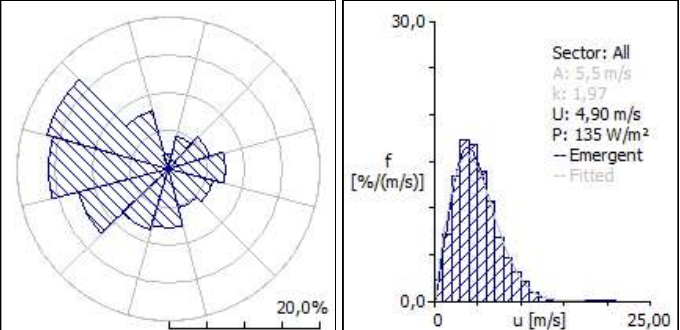
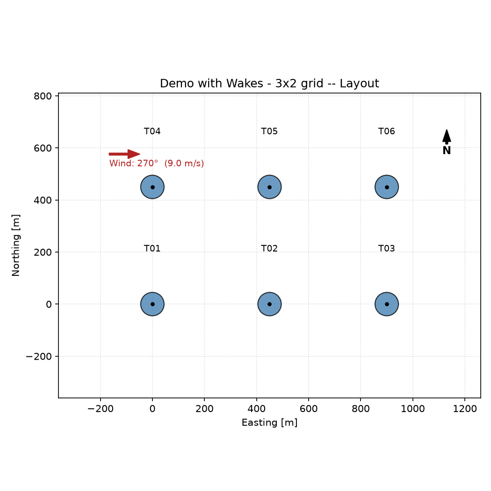

From a 10 m mast to a wind farm's annual energy
During a four-week internship at Greenard, a wind-energy studies firm in Casablanca, I learned the industry workflow for assessing a wind site in WAsP. Then I wrote my own Python tool that reproduces the core of it (wake models, Weibull integration and a loss cascade) and checked it against WAsP.
The problem
Wind is measured at one mast, often low and in the wrong place, but turbines stand higher and on different terrain. Power in the wind scales with the cube of speed:
Betz limitCp,max = 16/27 ≈ 0.593
So a 1 m/s error in mean speed can make or break a project. The job is to carry a measurement correctly across height, terrain roughness and relief, then turn it into energy.
What I did in WAsP
- Observed wind climate: 12 direction sectors with a Weibull fit for each. West to north-west dominates (270° and 300° together cover over 32% of the time), with a 4.90 m/s mean and 135 W/m² at 10 m.
- Wind Atlas: removed the local effects of the measurement site and generalised the climate across 5 roughness classes (0 to 1.5 m) and 5 heights (10 to 200 m).
- Resource grid: 12×15 nodes at 1 km resolution and 50 m height over the "Crest" terrain. Mean speed ranges from 6.52 to 8.19 m/s, and the best corridor follows the ridge.
- Turbine site 003: up to +14.3% speed-up from terrain in the 270° sector. RIX = 0% on every sector, so the linear model is valid there.
| Resource grid "Crest", 50 m | Min | Mean | Max |
|---|---|---|---|
| Mean wind speed [m/s] | 6.52 | 7.31 | 8.19 |
| Power density [W/m²] | 286 | 406 | 571 |
| AEP per 1 MW turbine [GWh/yr] | 2.165 | 2.780 | 3.438 |
Method sensitivity. For the same isolated turbine, WAsP gives a gross AEP of 3.239 GWh with the combined Weibull method and 3.185 GWh with the emergent method, a 1.71% gap. Even a simple case depends on the calculation method you choose.


Rebuilding the engine myself
To really understand what WAsP does inside, I wrote a modular energy-yield model with a Streamlit front end. It integrates turbine output over every sector and every 1 m/s speed bin of the Weibull distribution, converts probabilities to hours per year, then applies six post-wake losses.
| Module | Responsibility |
|---|---|
| turbine.py | Position, rotor diameter, hub height |
| wind_farm.py | Downwind and crosswind distances for every turbine pair, in a frame aligned with the wind |
| wake_model.py | Jensen (linear wake expansion Rw = R + kx) and Ainslie eddy-viscosity, solved with an RK45 integrator |
| power_curve.py | Cut-in, ramp-up, rated plateau and cut-out |
| topography.py | Flat, synthetic hill or imported terrain for turbine elevations |
| wind_resource.py | Wind rose with a Weibull distribution per sector, like the WAsP tables |
| energy_yield.py | Per-turbine AEP, loss cascade and farm capacity factor |
| app.py | Streamlit interface for terrain, wind rose, layout and loss inputs |
Loss cascade
| Loss, applied in order | Value |
|---|---|
| Shadow flicker | 1.60 % |
| Flow / turbine interaction | 1.08 % |
| Availability | 3.00 % |
| Electrical | 2.00 % |
| Turbine performance | 3.60 % |
| Environment (icing, soiling) | 1.00 % |

Does it agree with WAsP?
Fed the station's 12-sector Weibull table, the tool recomputes a mean of 4.90 m/s, which matches WAsP exactly. Then I compared two scenarios for six 1 MW turbines (54 m rotor, 50 m hub, 5 diameters apart, Jensen wakes).
| Scenario | Mean speed | Gross energy | Net energy | Cf |
|---|---|---|---|---|
| Raw station climate (10 m) | 4.90 m/s | 3,679 MWh/yr | 2,663 MWh/yr | 5.1 % |
| Corrected at turbine site (50 m) | 7.88 m/s | 16,186 MWh/yr | 9,264 MWh/yr | 17.6 % |
Same rotors and same rated power, but the capacity factor more than triples. Height extrapolation and terrain correction aren't a detail. They decide whether a project is worth building.
What I learned from the limit. In the second scenario I put all the wind in one direction (270°) to keep things simple. That exaggerates the wake losses: 62% on the third turbine in a row, against 1.13% when WAsP uses all 12 real sectors. A realistic wind rose spreads the wakes out, which is why it matters. You can see the effect yourself below.
Try it: Jensen wakes
The same Jensen model, running in your browser. Start at 270° (aligned rows) and then skew the wind to 300°.
Assumptions: rotor 54 m, thrust coefficient 0.8, generic 1 MW power curve (cut-in 3 m/s, rated 12 m/s), wakes combined by root-sum-square, one wind direction at a time.